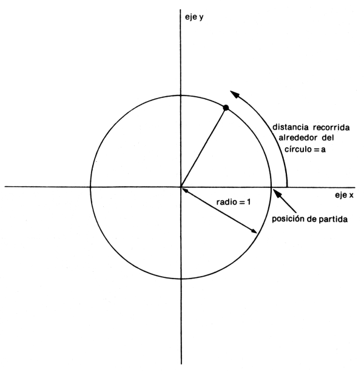
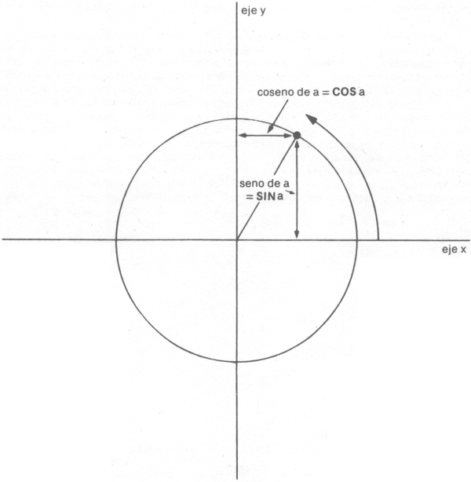

Manual de Basic Spectrum 48k. |
|
Capítulo 10
Funciones matemáticasResumen
Este capítulo trata de las funciones matemáticas de que dispone el ZX Spectrum. Es bastante probable que nunca tenga que hacer uso de estas funciones en absoluto, por lo que si lo encuentra demasiado pesado, no vacile en hacer caso omiso de este capítulo. Abarca la operación (elevación a una potencia), las funciones ESP y LN y las funciones trigonométricas SIN, COS, TAN y sus inversas ASN, ACS Y ATN. y EXP. Puede elevar un número a la potencia de otro, ello significa "multiplicar el primer número por sí mismo el número de veces indicado por el segundo". Esto se suele indicar escribiendo el segundo número inmediatamente encima y a la derecha del primer número; pero, evidentemente, esta notación sería difícil en un ordenador y por ello utilizamos el símbolo en su lugar. Por ejemplo, las potencias de 2 son:
Por consiguiente, a su nivel más elemental, 'a b' significa "a multiplicada por si misma b veces", pero, evidentemente, esta operación sólo tiene sentido si b es un número entero positivo. Para encontrar una definición que sirva para otros valores de b, consideramos la regla: a (b + c) = a b * a c
(Observe que damos a una prioridad mayor que a * y /, por lo que cuando haya varias operacions en una sola expresión, las operaciones se efectúan antes de las operaciones * y /). Es bastante claro que lo anterior se verifica cuando b y c son números enteros positivos; pero si decidimos que necesitamos operar incluso cuando no lo son, entonces, nos veremos obligados a aceptar que:
y
Si nunca vió alguna de estas expresiones con anterioridad, entonces, no trate de recordarlas directamente; limítese a recordar que: a (-1) = 1 / a
y
a (1 / 2) = SQR a
y quizás cuando esté familiarizado con estas expresiones, el resto comenzará a tener sentido. Experimente con todo ello probando este programa:
Por supuesto, si la regla que dimos anteriormente es cierta, los números que imprima cada vez el ordenador serán iguales. (Observación: Habida cuenta de la forma en que el ordenador actúa con respecto a la operación , el número a la izquierda, que es -a en este caso, nunca debe ser negativo). Un ejemplo bastante típico de la posible aplicación de esta función es la del interés compuesto. Suponga que tiene invertido parte de su dinero en una sociedad inmobiliaria y ésta le devenga un interés anual del 15%. Entonces, transcurrido un año, no sólo tendrá el 100% que tendría de todos modos, sino también los intereses del 15% que la sociedad inmobiliaria le haya proporcionado, lo que totaliza el 115% respecto a la cantidad que tenía originalmente. Para exponerlo de otra forma, ha multiplicado su cantidad de dinero por un factor de 1.15 como consecuencia de esta operación. Transcurrido otro año, volverá a suceder lo mismo, por lo que tendrá 1.15 * 1.15 = 1.15 2 = 1.3225 veces su cantidad de dinero original. En general, transcurridos y años, tendrá 1.15 y veces la cantidad inicial de que disponía. Si prueba este comando: FOR y = 0 TO 100: PRINT n, 10, 10 * 1.15 y: NEXT y
verá que incluso partiendo de solamente 2.000 pesetas su montante crece bastante rápidamente y, lo que es más, crece con mayor rapidez a medida que transcurre el tiempo (aún siendo así, podría considerar que no se mantiene a la altura de la inflación). Esta clase de comportamiento, en donde transcurrido un intervalo de tiempo fijo esa cantidad se multiplica por sí misma en una proporción fija, se denomina crecimiento exponencial, y se calcula elevando un número fijo a la potencia del tiempo. Suponga que hizo lo siguiente: 10 DEF FN a(x) = a x
En este caso, a es más o menos fija, mediante sentencias LET; su valor corresponderá al tipo de interés, que sólo cambia periódicamente. Hay un determinado valor para a que hace a la función FN a especialmente atractiva a los ojos de un matemático y este valor se denomina e. El ZX Spectrum tiene una función denominada EXP definida por: EXP x = e x
Lamentablemente, e en sí mismo no es un número especialmente atractivo, pues se trata de un número decimal no recurrente con infinitas cifras. Puede ver sus primeras cifras decimales haciendo PRINT EXP 1
porque EXP 1 = e 1 = e. Por supuesto, esto es sólo una aproximación. Nunca puede obtener el número e con exactitud. LN La inversa de una función exponencial es una función logarítmica; el logaritmo (en base a) de un número x es la potencia a la que tiene que elevar a para obtener el número x y se escribe logax. Así, por definición, a logax = x y es también cierto que log (a x) = x. Puede que ya conozca cómo utilizar los logaritmos de base 10 para efectuar multiplicaciones (dichos logaritmos se denominan logaritmos vulgares). El ZX Spectrum tiene una función LN que calcula logaritmos en base e (que se conocen como logaritmos naturales). Para calcular logaritmos en cualquier otra base, debe dividir el logaritmo natural por el logaritmo natural de la base: logax = LN x / LN a
PI Dado cualquier círculo, puede determinar su perímetro (la longitud de su contorno, que suele denominarse su circunferencia) multiplicando su diámetro (anchura) por un número llamado PI (letra griega que significa perímetro). Como el número e, PI es un decimal no periódico y su valor es 3.141592653589... La palabra PI en el Spectrum (en el modo extendido, entonces, M) se toma con el significado de este número. Pruebe PRINT PI. SIN, COS y TAN, ASN, ACS y ATN Las funciones trigonométricas miden lo que sucede cuando un punto se desplaza alrededor de un círculo. Consideremos un círculo de radio 1 (este valor del radio no es crítico y se toma para facilitar los cálculos) y un punto que se desplaza alrededor del mismo. El punto comienza su desplazamiento en la posición de las tres en punto y se va moviendo en sentido contrario a las agujas del reloj. 
Hemos dibujado también dos líneas denominadas ejes que se cruzan en el centro del círculo. La línea horizontal (entre las posiciones de las tres y de las nueve en punto de un reloj) se denomina el eje x y la vertical (entre las posiciones de las 6 y de las 12 en punto) se denomina el eje y. Para especificar dónde está el punto, dirá cuánto se ha desplazado éste alrededor del círculo a partir de su posición de partida de las tres en punto: llamaremos a esta distancia a. Sabemos que la longitud de la circunferencia del círculo es 2 PI (porque su radio es 1 y su diámetro es, pues, 2), por lo que cuando se haya desplazado una cuarta parte del recorrido del círculo, será a = PI / 2, cuando se haya desplazado la mitad de su recorrido será a = PI y cuando haya realizado el recorrido completo, será a = 2 PI. Dada la distancia en forma curvilínea alrededor del contorno, a, puede considerarse oportuno conocer otras dos distancias para determinar cuánto se ha desplazado el punto a la derecha del eje y y cuánto por encima del eje x. Estas se denominan coseno y seno de a respectivamente. Las funciones COS y SIN en el ordenador sirven para calcularlas. 
Tenga presente que si el punto se desplaza a la izquierda del eje y, entonces, el coseno se hace negativo y si el punto pasa a la región por debajo del eje x, el seno se hace negativo. Otra propiedad es que una vez que a haya alcanzado el valor de 2 PI, el punto vuelve al punto de partida y el seno y el coseno comienzan a tomar los mismos valores que antes:
La tangente de a se define como el seno dividido por el coseno y la función correspondiente en el ordenador se denomina TAN. A veces, necesitamos trabajar con estas funciones a la inversa cuando lo que se da es el valor que toman dichas funciones y hemos de determinar el valor de a correspondiente. Las funciones que permiten realizar esta operación se denominan arco seno (ASN en el ordenador), arco coseno (ACS) y arco tangente (ATN). En el diagrama del punto que se desplaza alrededor del círculo, examine el radio que une el centro con el punto. Debe ser capaz de constatar que la distancia que hemos llamado a, la distancia que el punto ha recorrido a lo largo del contorno del círculo, es una forma de medir el ángulo a través del cual el radio se ha desplazado alejándose del eje x. Cuando a = PI / 2, el ángulo es de 90º; cuando a = PI el ángulo es de 180º y así sucesivamente, hasta llegar a que sea a = 2 PI en que el ángulo será de 360º. Asimismo, podría hacer caso omiso de los grados y medir el ángulo en función de a solamente y diremos, entonces, que estamos midiendo el ángulo en radianes. Así, PI / 2 radianes = 90 grados, etc. Siempre debe tener presente que, en el ZX Spectrum, las funciones SIN, COS, etc., trabajan con radianes y no con grados. Para la conversión de grados en radianes, hay que dividir por 180 y multiplicar por PI; para pasar de radianes a grados, tendrá que dividir por PI y multiplicar por 180. |
Manual de Basic Spectrum 48k. |